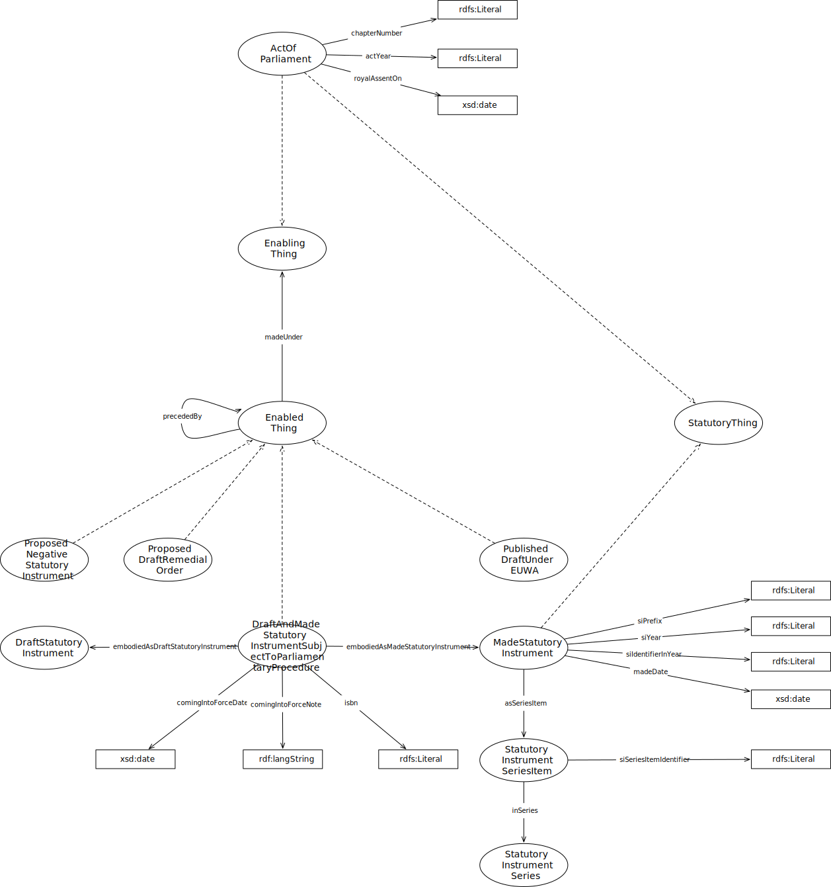

IRI: http://parliament.uk/ontologies/legislation/ActOfParliament
IRI: http://parliament.uk/ontologies/legislation/DraftAndMadeStatutoryInstrumentSubjectToParliamentaryProcedure
IRI: http://parliament.uk/ontologies/legislation/DraftStatutoryInstrument
IRI: http://parliament.uk/ontologies/legislation/EnabledThing
IRI: http://parliament.uk/ontologies/legislation/EnablingThing
IRI: http://parliament.uk/ontologies/legislation/MadeStatutoryInstrument
IRI: http://parliament.uk/ontologies/legislation/ProposedDraftRemedialOrder
IRI: http://parliament.uk/ontologies/legislation/ProposedNegativeStatutoryInstrument
IRI: http://parliament.uk/ontologies/legislation/PublishedDraftUnderEUWA
IRI: http://parliament.uk/ontologies/legislation/StatutoryThing
IRI: http://parliament.uk/ontologies/legislation/embodiedAsDraftStatutoryInstrument
IRI: http://parliament.uk/ontologies/legislation/embodiedAsMadeStatutoryInstrument
IRI: http://parliament.uk/ontologies/legislation/madeUnder
IRI: http://parliament.uk/ontologies/legislation/precededBy
IRI: http://parliament.uk/ontologies/legislation/actYear
IRI: http://parliament.uk/ontologies/legislation/chapterNumber
IRI: http://parliament.uk/ontologies/legislation/comingIntoForceDate
IRI: http://parliament.uk/ontologies/legislation/comingIntoForceNote
IRI: http://parliament.uk/ontologies/legislation/isbn
IRI: http://parliament.uk/ontologies/legislation/madeDate
IRI: http://parliament.uk/ontologies/legislation/royalAssentOn
IRI: http://parliament.uk/ontologies/legislation/siIdentiferInYear
IRI: http://parliament.uk/ontologies/legislation/siPrefix
IRI: http://parliament.uk/ontologies/legislation/siYear
This HTML document was obtained by processing the OWL ontology source code through LODE, Live OWL Documentation Environment, developed by Silvio Peroni.